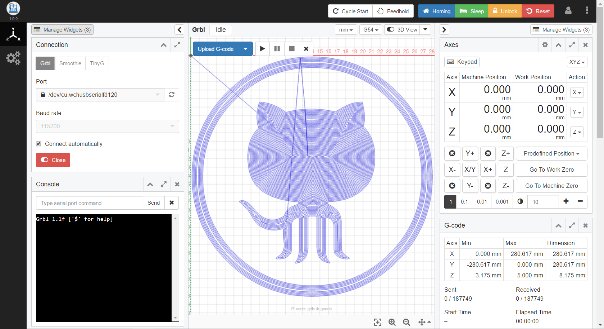
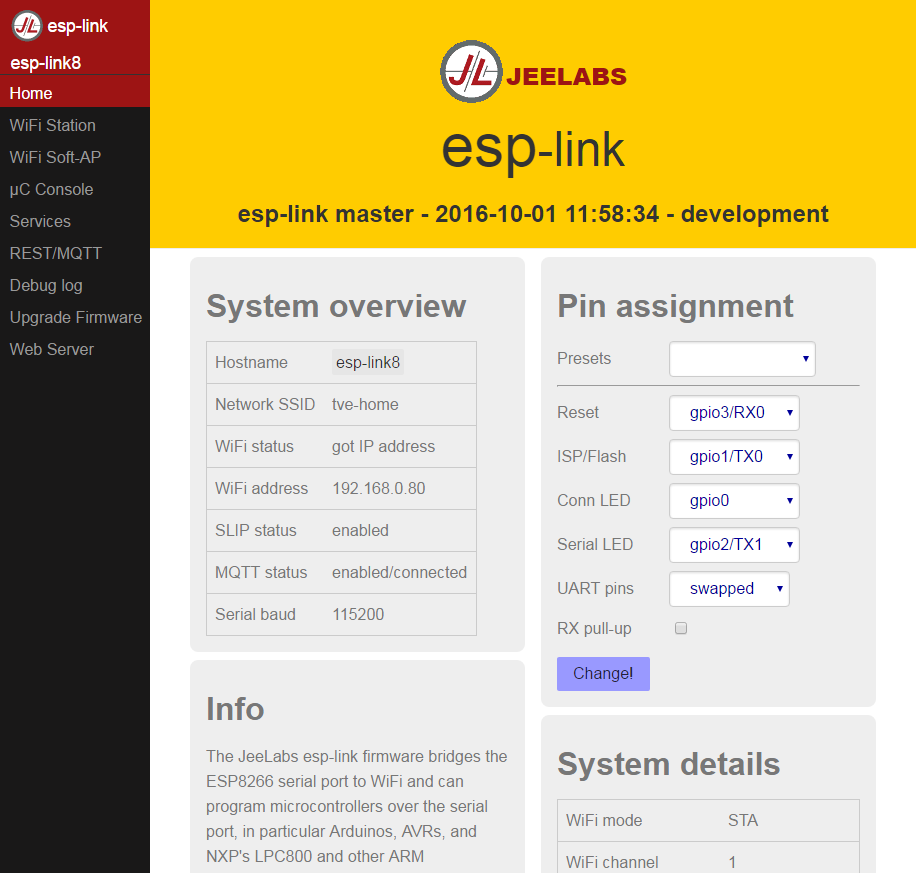
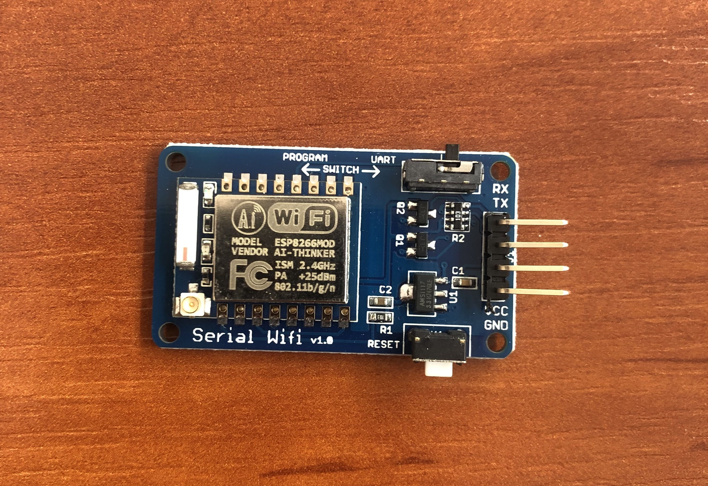

Programming, robotics, traveling
Навигация по проекту:
После замены компьютера на котором был Mach3 на Arduino, у станка не стало оконного интерфейса, взамен появился UART-интерфейс способный исполнять gcode-команды. Однако использовать терминал для управления станком не удобно. Нужен какой-то интерфейс, который позволит выполнять ручное управление станком (как пультом), а также позволит производить запуск управляющих программ.
Дополнительный фактором, который для меня был критичен – я не хотел запускать программу для управления станком локально, а хотел использовать веб-приложение запускаемое на стороне станка. К которому я подключался бы через Wi-Fi сеть развернутую на Raspberry Pi.
Собственно, достаточно-известных проектов предстовляющих веб-интерфейс для управления CNC машиной всего пару штук:
И тогда как Octoprint заточен под 3D печать, CNCjs как раз наоборот под milling / cutting machine.

Впервые я узнал о CNCjs из статьи компании Balena. Данное решение предназначено для использования в среде balenaCloud. В кратце этот сервис предоставялет экосистему состоящую из:
После скачивания и установки образа, SBC автоматически подключается к облаку через выбранный вами вариант подключение к интернету. Затем с помощью облачного интерфейса можно управлять приложениями на ваших одноплатных компьютерах. Запуск нескольких приложений осуществляется с помощью немного дополненного docker-compose файла и шаблонизатора на стороне сервиса.
Я решил не использовать balenaCloud, тк собрал собственное облако. А сборку преднастроенных ОС для Raspberry Pi делаю с помощью img-builder. К сожалению в репозитории Balena не было готовой версии для arm64 и они не публикуют свои docker-образы, а также в сборке уже поломались зависимости.
Собрать CNCjs из исходников мне никак не удавалось, и я решил пойти другим путём. Тк CNCjs поставляется в виде NodeJS пакета я решил его так и установить. Однако и тут тоже возникли сложности, например я хотел использовать за основу образ Alpine, но из-за отсуствующих зависимостей удалось все завести только на Debian.
Взяв за основу Dockerfile от Balena, я сделал свою реализацию. Затем собрал образ для arm64 и выгрузил на Docker Hub.
Запускаю я своё решение через docker run тк это всего один контейнер. Для хранения настроек использую внешний docker volume. Подробнее вы можете прочитать об этом в моём репозитории.
Изначально я планировал разместить Raspberry Pi внутри станка, так и сделал. Я ожидал, что после закрытия крышки сигнал будет слабый, но достаточный для работы на расстоянии пары метров. Однако сигнал пропадал вовсе.
Было три варианта:
Я выбрал 3й вариант.
С счатью задача передачи UART интерфейса по сети достаточно широко-используется. Поэтому я с легкостью нашел проект – ESP-Link.

У него есть как минусы:
Так и плюсы:
Описывать прошивку и настройку ESP-Link я не стану, все достаточно легко гуглится. Единственное, покажу очень удобную для этих целей плату:

Собственно единственным реальным затыком было придумать как подключить CNCjs к сокету в который публикует байты ESP-Link. Путей два:
Я выбрал второй путь, тк он мне представляется как более лёгкий, хоть мб и не такой изящный и правильный.
Немного погуглив, я нашел утилиту socat которая умеет делать link сокета к файлу. Можно, конечно, заморочиться и использовать напрямую nc, но в данном контексте, думаю, что socat – идеальное решение.
Изначально я планировал сделать два контейнера CNCjs и socat. Однако несмотря на то, что в linux есть файловая абстракция, мне не удалось прокинуть файл сокета из одного в контейнер в другой средствами Docker. Не найдя решения, я решил разместить оба процесса в одном контейнере.
Для управления их состоянием добавил мастер-процесс – supervisor. Однако это решение работало нестабильно и иногда после отключения станка, приходилось перезагружать весь контейнер. Ну или ставить WebUI для supervisor. А еще весь лог был переполнен, тем как socat пытается подключиться к станку, естественно у меня станок включен далеко не всегда. В итоге я решил вопсользоваться встроенные в cncjs функционалом команд.
{
"ports": [
{
"comName": "/dev/tty.esplink",
"manufacturer": "ESP LINK"
}
],
"commands": [
{
"title": "Start socat",
"commands": "/usr/bin/socat pty,link=/dev/tty.esplink,raw,echo=0 tcp:${ESPLINK}"
},
{
"title": "Stop socat",
"commands": "pkill -f socat"
},
{
"title": "Restart CNCjs",
"commands": "pkill -f cncjs"
}
]
}
Также я собрал Docker образ с cncjs под arm64 с предустановленным socat (репозиторий / докер образ).